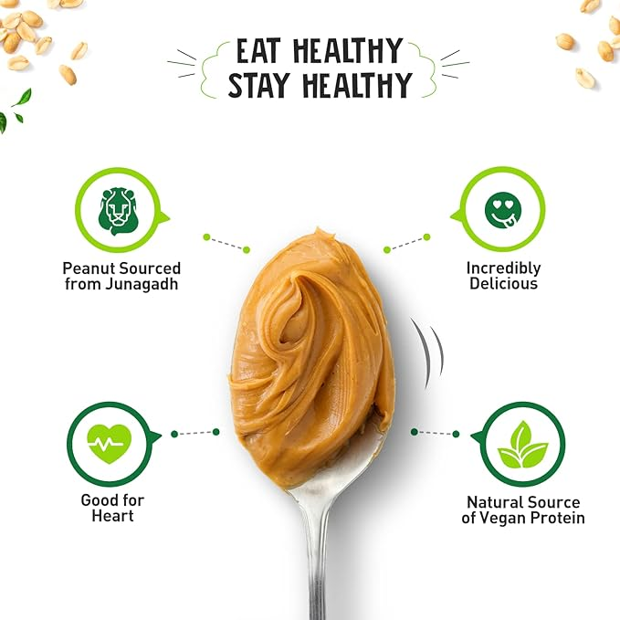

1-NON-GMO Peanut Butter ALPINO Natural Peanut Butter Smooth 1kg - Made with 100% Roasted Peanuts - 30g Protein, No Added Sugar & Salt, non-GMO, Gluten Free, Vegan – Plant Based... Vegan Coating Made in USA
Peanut Butter rich in several nutrients, including protein and magnesium, which may help protect the heart and manage blood sugar and body weigh.
About this item:-
1.❤ Made with 100% Roasted Peanuts with, No Added Sugar, Salt and, Hydrogenated Oils ❤
2. ❤ Good Source of Vitamins E, B3 & B6, Rich in Minerals: Iron, Magnesium, Phosphorous and Potassium❤
3. ❤ Consists of 30 G Protein, Rich Source of Fibre, Zero Trans Fat and, Zero Cholesterol❤
4. ❤ Manufactured Under US FDA, APEDA, BRC and FSSAI Certified Facility, Under Strict Quality Control.❤
_______________________________________________________________________________________________________________________________________________________
Click here to buy :-

5 Benefits of Taking Peanut Butter
1.Aids Weight Loss and Weight Maintenance
2. Peanut Butter Preserves Muscle Mass .
3.Peanut Butter Reduces Risk of Heart Diseases.
4.Peanut Butter Best for Fitness Enthusiasts.
5. Peanut Butter Manages Blood Sugar Levels
Important information...
Safety Information
ALLERGEN WARNING: CONTAINS SOY (LECITHIN), MILK (TRYPSIN), AND FISH. CAUTION: This product is manufactured and packaged in a facility which may also process milk, soy, wheat, egg, peanuts, tree nuts, fish and crustacean shellfish. KEEP OUT OF THE REACH OF CHILDREN. DO NOT USE IF SAFETY SEAL IS DAMAGED OR MISSING. STORE IN A COOL, DRY PLACE.
Ingredients
Roasted Peanuts (100%)
SUGGESTED USE: 1 tablet taken 1 to 3 times daily preferably with meals or as directed by a healthcare professional.
Legal Disclaimer
Statements regarding dietary supplements have not been evaluated by the FDA and are not intended to diagnose, treat, cure, or prevent any disease or health condition.